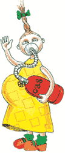

Вам мальчика или девочку? |
|---|
|
Во время половой близости во влагалище женщины погадает 300-500 миллионов сперматозоидов. В его кислой среде большая их часть гибнет, лишь самые стойкие попадают в шеечную слизь, имеющую слабощелочную реакцию, которая облегчает движение. Прежде чем добраться до яйцеклетки, сперматозоидам предстоит пересечь полость матки и попасть в маточную трубу. Этот путь они проделывают за 2-2,5 часа. По последним данным, их оплодотворяющая способность сохраняется в течение 2 суток. Итак, яйцеклетку, попавшую в маточную трубу, быстро окружает армия сперматозоидов. Яйцеклетка всегда является носительницей половой Х- хромосомы, сперматозоиды же бывают двух видов; носители Х- и У- хромосом. Если с ней спивается тот сперматозоид, что несет Х-хромосому, появляется эмбрион женского пола (XX), а если раньше него успевает носитель У- хромосомы, возникает зародыш мужского пола (XV). Это значит, что ответственность за поп будущего малыша в буквальном смысле несет сперматозоид, а точнее, его хозяин - отец будущего ребенка.
Есть еще несколько обстоятельств, кроме вышеперечисленных, которые тоже могут повлиять на пол малыша. Например, есть семьи, где из поколения в поколение рождаются только мальчики или только девочки. Почему так бывает? Видимо, здесь существует какая-то генетическая предрасположенность к рождению детей одного пола. А возможно, все депо в особенностях спермы, которые влияют на количество сперматозоидов группы X или V. Кроме того, как стало известно, сперматозоиды с Х - и У - хромосомами различаются: несущие Х- хромосому несколько крупнее и двигаются медленнее тех, что несут У - хромосому. Однако последние хоть и шустрее, но не отличаются стойкостью и быстрей погибают. Следовательно, те сперматозоиды, что несут информацию «на мальчика» быстрее достигнут места встречи, но, если эта встреча не состоится в течение 48 часов (овуляции еще не было, и их еще не ждали), они погибнут. А сперматозоиды, несущие информацию «на девочку», доберутся до цели медленнее, но, если овуляция уже произошла и яйцеклетка ждет (а ждать она может, как мы знаем, не больше 24 часов), встреча состоится. Итак, если половая близость случилась перед овуляцией (при нормальном цикле на 12-13-й день), будущие родители имеют гораздо больше шансов получить девочку, так как быстрые У прибегут раньше времени и не дождутся встречи-овуляции, а медленные X окажутся на месте как раз в срок, и образуется половая клетка XX. Если же половая близость пришлась на момент овуляции или первые сутки после нее (14-15-й день нормального цикла), то быстрые У настигнут яйцеклетку первыми, и получится мальчик (ХУ).
 Обычно специалисты помогут определиться в этом вопросе с конца 1 -го триместра беременности. Существуют два метода, позволяющих узнать пол ребенка до его рождения; УЗ - исследование (с 24-28-й недели беременности, точность прогноза - около 85%) и анализ околоплодных вод (с 14-16-й недели, но только по показаниям, например, чтобы исключить генетические болезни). Столь важная для родителей проблема, как пол будущего ребенка, конечно, обросла множеством примет, по большей части смешных. Существуют, однако, две приметы, на которые родители вполне могут положиться.
А стоит ли вмешиваться в развитие событий, пытаясь повлиять на пол, ребенка? Как нам кажется, делать этого не стоит, ведь так мы можем нарушить естественное соотношение мужчин и женщин, необходимое для продолжения жизни на Земле. |
| Месяцы | янв | фев | мар | апр | май | июнь | июль | авг | сент | окт | нояб | дек |
|---|---|---|---|---|---|---|---|---|---|---|---|---|
| Возраст матери | ||||||||||||
| 18 | Д | М | Д | М | М | М | М | М | М | М | М | М |
| 19 | М | Д | М | Д | М | М | М | М | М | Д | М | Д |
| 20 | Д | М | Д | М | М | М | М | М | М | Д | М | М |
| 21 | М | Д | Д | Д | Д | Д | Д | Д | Д | Д | Д | Д |
| 22 | Д | М | М | Д | М | Д | Д | М | Д | Д | Д | Д |
| 23 | М | М | Д | М | М | Д | М | Д | М | М | М | Д |
| 24 | М | Д | М | М | Д | М | М | Д | Д | Д | Д | Д |
| 25 | Д | М | М | Д | Д | М | Д | М | М | М | М | М |
| 26 | М | Д | М | Д | Д | М | Д | М | Д | Д | Д | Д |
| 27 | Д | М | Д | М | Д | Д | М | М | М | М | Д | М |
| 28 | М | Д | М | Д | Д | Д | М | М | М | М | Д | Д |
| 29 | Д | М | Д | Д | М | М | Д | Д | Д | М | М | М |
| 30 | М | Д | Д | Д | Д | Д | Д | Д | Д | Д | М | М |
| 31 | М | Д | М | Д | Д | Д | Д | Д | Д | Д | Д | М |
| 32 | М | Д | М | Д | Д | Д | Д | Д | Д | Д | Д | М |
| 33 | Д | М | Д | М | Д | Д | Д | М | Д | Д | Д | М |
| 34 | Д | Д | М | Д | Д | Д | Д | Д | Д | Д | М | М |
| 35 | М | М | Д | М | Д | Д | Д | М | Д | Д | М | М |
| 36 | Д | М | М | Д | М | Д | Д | Д | М | М | М | М |
| 37 | М | Д | М | М | Д | М | Д | М | Д | М | Д | М |
| 38 | Д | М | Д | М | М | Д | М | Д | М | Д | М | Д |
| 39 | М | Д | М | М | М | Д | Д | М | Д | Д | Д | Д |
| 40 | Д | М | Д | М | Д | М | М | Д | М | Д | М | Д |
| 41 | М | Д | М | Д | М | Д | М | М | Д | М | Д | М |
| 42 | Д | М | Д | М | Д | М | Д | М | М | Д | М | Д |
| 43 | М | Д | М | Д | М | Д | М | Д | М | М | М | М |
| 44 | М | М | Д | М | М | М | Д | М | Д | М | Д | Д |
| 45 | Д | М | М | Д | Д | Д | М | Д | М | Д | М | М |
<На главную> <Назад> <Далее>